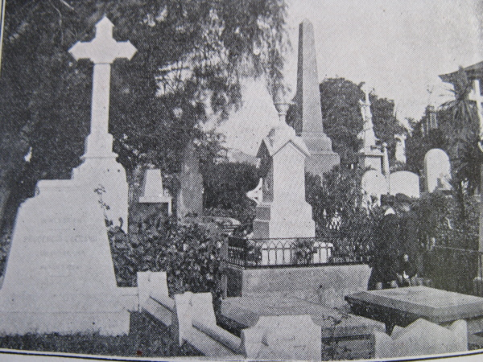

El Cementerio de Disidentes is located, as are cemeteries No.1 and No.2, on Cerro Panteon. This used to be accessible by an ascensor but few signs of it now remain. The cemeteries can be reached by frequent bus or colectivo service from Avenida Ecuador. One can also reach them by some strenuous climbing up several flights of stairs from Avenida Ecuador or Calle Cumming. Free, on street parking is available in front of each cemetery gate.
The cemetery is normally open from 10-1 and 3-5 on weekdays, and 10-1 on Sundays.
Chile, Valparaiso and Britain in the Nineteenth Century
El Cementerio de Disidentes is located, as are cemeteries No.1 and No.2, on Cerro Panteon. This used to be accessible by an ascensor but few signs of it now remain. The cemeteries can be reached by frequent bus or colectivo service from Avenida Ecuador. One can also reach them by some strenuous climbing up several flights of stairs from Avenida Ecuador or Calle Cumming. Free, on street parking is available in front of each cemetery gate.
The land of Chile was occupied for thousands of years by Amerindian peoples, but in the 16th century Europeans, beginning with Magellan in 1520, explored and subsequently settled along the coast and inland. Spain colonised the area, with Valdivia founding the port of Valparaiso in 1544. In 1810 Chile declared independence and its ports were opened to all nations. In the early 1820s it was reported that “the foreign trade is almost exclusively in the hands of Englishmen, who, with two or three exceptions, are merely commissioned agents.” Accordingly, a British community developed in Valparaiso and it was noted that “the few English families residing here associate wholly among themselves.” The first British Vice-Consul in Valparaiso was appointed in 1823.
By 1830 the country had a population of 4.3 million, of whom 105,463 were “foreign born,” only one quarter of them being Spaniards. It has been said that “by 1850 England, France and Germany had largely crowded Spain out of the Chilean trade.” The British also became involved in resource development, especially of nitrates, and communications, especially railways, as well as with the Chilean navy. In 1900 it was estimated that 20,000 residents in Chile were of British descent.
The opening of the Panama Canal in 1914 markedly reduced the importance of Valparaiso and gradually British involvement in trade and other commercial enterprises in Chile and Valparaiso declined. Nevertheless, it was concluded in the late 1960’s that “there is probably no other country in the world, that never was a part of the British Empire or Commonwealth, where British associations and sympathies are so strong.” Family names, apparently of British origin, are still common in Chile.
Many appear on the gravestones in El Cementerio de Disidentes in Valparaiso.

Why a Separate Cemetery?
Until the nineteenth century non-catholics, such as many of the British, were not permitted to have a church or be buried in the catholic cemetery. Some people were “buried” at sea after funeral ceremonies on British ships, or below high water mark on the beach. As this was not satisfactory, 47 protestant foreigners signed an appeal to Supreme Director Bernardo O’Higgins for the right to buy land in Santiago and Valparaiso to be used as burial grounds. O’Higgins approved this on December 14, 1819.
The general cemetery (No.1) opened for catholics on Cerro Panteon in 1823. A title deed in the name of H.M. Consul of Valparaiso for land adjacent to Cemetery No.1 to be used as a burial ground for “disidentes” was issued in 1825. This concession to foreigners may have been stimulated by the fact that in officially recognising Chilean independence the British sought guarantees that British subjects would enjoy freedom of worship and the right to bury their dead decently and in accordance with protestant custom. A protestant cemetery committee was established to raise funds and Samuel Friedrich Scholz a German merchant with Silesia and William Armstrong was commissioned to buy land. Two adjacent private properties on Cerro Panteon were bought in August 1825 and another adjoining municipal lot in March 1826. All were bought in the name of the British consul. A meeting, reported in the “El Mercurio” newspaper of 26 November 1827, revealed who had contributed to the cemetery. Some contributions were made by individuals, some by ships, and some by businesses or associations. For example, it is recorded that a Captain Peter Dillon subscribed to its upkeep in 1827. The cemetery was originally known as the “Cementerio de Extranjeros del Puerto y la Ciudad de Valparaiso.”
The British in Valparaiso also wished to build a church. The first Anglican services in Valparaiso were held in 1825 by Thomas Kendall in his home, until he left in 1828. In 1837, the British appealed to the Bishop of Exeter to establish a church. They pointed out that the protestant community contains 500 souls, two thirds being British. They are somewhat important commercial people. Some want divine service. Previously local intolerance prevented this. Finally they stated that the Chilean government was now willing to allow the building of a school in which services could be held.
The cemetery was enlarged and improved in 1849 under the auspices of Admiral Blanco Encalada, the civil and military governor of Valparaiso. A treaty in 1855 gave British protestants the right to erect cemeteries wherever they resided in Chile though acquiring land and local approval remained problematic. On 2 August, 1883 a law was passed requiring that all state and municipal cemeteries accept all persons for burial. In 1905, it was said that the cemetery “represents for a long time an idea of liberty, a refuge of religious tolerance, an argument in favour of respect for all beliefs.”
While the cemetery appears full, burials in family grave plots, mausoleums, or wall niches still occur.
A book recording all the people buried or commemorated in the cemetery, the dates of burial and the location of graves is kept in the caretaker’s office and available for inspection. The cemetery caretaker willingly assists visitors in seeking particular graves.
Cemetery Architecture
The cemetery has an art deco gateway, presumably built long after the cemetery was established. This is in marked contrast to the enormous classical gateway, now being restored, to Cemetery No.1, and a similar gateway to Cemetery No.2. From the gateway a main aisle leads straight, gradually up hill, to the end of the cemetery. On either side of the main aisle is a rectangular grid of paths and grave plots. The whole cemetery is surrounded by a high wall, parts of which have burial niches, or name plates affixed to it. There are some attractive trees, a few benches, a worker’s hut, and a caretaker’s house and office.
Most of the graves are marked by vertical or horizontal stones of various types of rock, usually grey, some having been imported. There are some small mausoleums dedicated to particular families, though none as elaborate as the bigger ones in Cemetery No.1. Most date from the twentieth century, and often have art deco grill work. Some grave plots and stones have been provided by organisations such as the Royal Navy, the Masons, a Fire Brigade and several companies. There are various crosses, including Celtic ones, and one iron cross. Statuary, especially angels, is common and made of stone, plaster, and iron. Some graves are surmounted by obelisks, often of granite. A few have ironwork, such as chains, around them. Graves are often decorated with artificial or natural flowers. Some of the gravestones are severely weathered, making their texts difficult or impossible to read. Broken stones and statues are unfortunately common and may be attributed to earthquake damage or neglect.
Earliest Burials
The first foreigner to die from natural causes in Valparaiso after independence was probably Peter Adam (or Peter Adam Copsenay) in 1818. As his will showed, he was legally married. He must have been catholic so was probably buried in the catholic cemetery. The first recorded burial in the protestant cemetery was of Captain William Wilkinson of the Chilean Navy, on August 22, 1825. In 1827 the remains of Lt. Col. James Charles, who had died heroically serving Chile in Peru in 1819, were removed from the White Fort on Cerro Cordillera and reburied in this cemetery. No complete record exists of burials until 1838, after which a good record has been kept.
Dieing Young, Dieing Old
In the nineteenth century lifespans were shorter than today and many infant deaths occurred. Some families in particular seem to have been deprived of many of their members at a young age. Numerous gravestones indicate birth and death dates, or age upon death.
The OXLEY family was especially unfortunate in the mid-nineteenth century. Samuel died in 1843, age 13 months, Isabel in 1844 at 18 months, Edward in 1847 at 20 months, John in 1861 at 10 months and Henry Augustus in 1864, age 8 years. The BLEST family, despite their surname, were likewise unfortunate. Irene died in 1843 age 23, Anna in 1845 age 25 and Isabel in 1846, age 21. One gravestone notes unusually that Frank William MITCHELL died in 1916 “after a long illness” at age 40.
Some gravestones, however, show that some people lived to a ripe old age. For example, Elizabeth C. BUNSTER LEIGH died in 1917 age 93. Mary CAMPBELL died in 1915, age 87.
The Mariners
From the age of exploration and piracy onwards numerous mariners of all ranks working on naval or merchant ships came to Valparaiso. Most returned home but some, through accident, illness or intent, were buried here.
Lieut. R.N. Grosvenor BUNSTER served under Nelson at the Battle of Trafalgar. He came to Chile in 1827 to join his younger brother Humphrey (Onofre) Bunster. Humphrey was a Lieut. R.N. born in Cornwall, probably in Falmouth, who came to Chile in 1822 with the navy. He was captured by Chileans and stayed.
Louis Horatio Beckford BEVAN, Captain in the Royal Navy, was born in 1888 and died in Valparaiso in 1930 whilst in command of H.M.S. Dragon.
The Royal Navy Vault commemorates “the officers and men of the Royal Navy whose names are engraved on the cover of this vault who lost their lives in active service off the coast of Chile and whose mortal remains are buried herein.” There are 40 names of sailors who died between 1846 and 1959 while associated with 19 ships.
The greatest loss of life on a British ship occurred on 21 June 1903 when the S.S. Arequipa, built in 1889 for South American coastal service, sank in a storm in Valparaiso Bay. The bay is vulnerable to storms from the north-west, and this was an unusually severe one. About 80 crew and 20 passengers were lost, but about 20 others were rescued. Amongst those lost were Captain F.J. Todd and his wife Alice, James Christie, 1st engineer, H.M. Metcalfe, senior clerk, Henry Gates, first cook and W. Thomas, lamp trimmer.
Shipping Companies
Numerous shipping companies based abroad or in Chile have enabled trade with Chile, especially through Valparaiso. Of particular importance was the Pacific Steam Navigation Company (PSNC). The PSNC was founded in 1839 or 1840. A Mr. William Wheelwright of the USA, a “steam pioneer” obtained concessions from the Chilean and Peruvian governments to run a steamship service from those countries to Britain. He gained financial support from Lord Abinger. Two steamships of 750 tons and 180 horsepower were built. Named the “Chili” and “Peru,” they reached Chile in 1840. Shortly after 1850 the company had seven ships operating on the west coast of South America. The Company’s burial vault lists 25 mostly British names dating from 1903 to 1972. Another PSNC worker commemorated separately was Claud MILLER, a native of Govan and a blacksmith, who died in the English Hospital, Valparaiso in 1871.
Businesses
From the early years of the nineteenth century the British established numerous businesses in Chile, many based in Valparaiso. They employed people from Britain or Chile and some of the British lived most of their lives, and died, in Chile.
One of the first British merchant houses in Chile was associated with the GIBBS family. It was founded in London in 1808 and began trading with Spain, then Peru. Since 1847 it has operated continuously in Chile.
John S. MORRISON was born in Scotland in 1834, settled in Chile before 1857 and went into business. He married Isabella Denholm, who was also born in Scotland, in 1837, and died in Valparaiso in 1904. She was the first mistress at Mackay’s school. They had at least five sons and two daughters. John Morrison died in Edinburgh in 1907, age 74. One grandson of John Morrison, a partner in the firm, sold the family interest in it in 1963.
John COMPTON had an ancestor who settled in Chile in 1840. Being the second born, he was expected to enter the militia or church but preferred instead to come to Valparaiso. He became a businessman and landowner. He bought lands in the south, owned large ranches, and ran lumber mills. Later he was the owner of an important storage unit in Valparaiso. It was eventually acquired by neighbours, the Huckes, who then used it for their famous cookie factory. In 1898 John began to construct a mansion, with an adjacent guesthouse, on Monte Alegre Street. Later the family moved to a stately country house, known as Compton Villa, in Placilla. There Sir Edmund Compton was born. He went to England and worked as General Teasurer of the U.K.
James MONK, a “native of Wigan, England,” in 1862, was advertising his business as a commission merchant in Valparaiso. He died on 28 November 1890, age 66.
Professions
British immigrants also went into various professions. William Lennie MACQUEEN was born in Drymen, County Stirling, Scotland in 1832. He was the son of a school master. He came to Chile in 1849 and became Valparaiso manager of the Banco Nacional de Chile. He died in Valparaiso in 1879. His son, William Archibald (1879-1941) was a stockbroker in Vina del Mar. Harold SYDNEY-MERRITT founded his company in Iquique in 1897. It provided accountancy and financial services for banks, saliteras, railways, mines, industry and livestock operations. He died in Valparaiso in 1919.
Church and Missionaries
The potential for missionary work in the south of Chile was noted by Captain Alan F. Gardiner, R.N., who, in 1841, published “A Visit to the Indians of the Frontiers of Chili.” The book helped the formation of the Patagonian Missionary Society from which sprang the South American Missionary Society that was still active in 1917.
William Reade GARDINER, second son of the late Rev. Allen W. Gardiner of Lota, died in Valparaiso in 1891 at the age of 27 years, on his way to taking up mission work in Araucania.
Solena Bose ALEXANDER, was a presbyterian missionary who lived from 27 September 1903 to 17 August 1939.
Communications
The development of Chile has always depended on communications, including roads, railways as well as the telegraph and telephone. As in some other countries, such as Argentina, British subjects were especially involved in railway development in Chile. Some of those ended their days in Valparaiso and are commemorated as railway men in the cemetery. For example, the monument for James MARTIN who was born in Aberdeen on 13 August 1828 and died in Valparaiso on 5 June 1871, records that he was “for six years locomotive superintendent of the Santiago and Valparaiso Railway.”
Peter PURVES, who died on 31 October 1878, at the age of 44, was a native of Edinburgh. He was “for 20 years in the employment of the Santiago and Valparaiso Railway. Seven years of that time he occupied the situation of locomotive superintendent, in which position he was highly respected by all who knew him.”
The monument for John James JOHNSTON, of Muff County, Donegal, Ireland was erected after his death on 8 June 1886, at the age of 29, by “the staff of the West Coast of America Telegraph Co.”
The Scots
On visiting the cemetery one is immediately struck by the number of apparently Scottish names, Mac’s and Mc’s being common. There are at least 9 Mackay, 12 McLaughlin, 10 McIntosh and 10 McKinlay. Also there are at least 24 Campbells. Numerous Scottish birthplaces are indicated including: Edinburgh, Glasgow, Macduff and Auchterhouse.
The grave of Alexander KENNEDY, who died in Valparaiso in 1892, indicates that he was “formerly of Edinburgh, afterwards merchant at Chanaral.” Captain William Taylor was “a native of Dumfries.” John William HARDY, who died in 1933, and his wife Annie MacPherson, who died in 1943, were both born in Greenock. William Ogilvie FYFE was from Lintrathen, Scotland.
The Cornish
Cornwall, England has a long history of mining, and many people have emigrated from there to work in mines in other countries such as Chile.
John HICKS, who died in 1911, was from St. Just and his wife Mary, who died in 1915, was from the mining town of Redruth in Cornwall. James Henry JORY, who died in 1918, was “a native of Cornwall.” John King WHEALES and Thomas Harvey MITCHELL were also from Cornwall.
The Liverpool Connection
Many of the ships coming from Britain to Chile in the nineteenth century sailed from Liverpool. So it is not surprising to find some people buried in the cemetery being identified as from Liverpool or nearby. Doubtless others, whose origin is unknown, were from this city. One of the earliest and most important trading links between Liverpool and Valparaiso was established by Williamson, BALFOUR and Co. The company, originally named “S. Williamson and Co.” was established in Liverpool in 1851, and opened an office at 591 Calle Blanco in Valparaiso in 1852. It was involved with trading, flour milling, even sheep farming on Easter Island, as well as banking and insurance. Later the company became the exclusive dealer in Cadillac and Chevrolet cars.
In 1864 Sawyers, Duncan and Co. was founded in Liverpool. The name was changed to DUNCAN FOX and Co. in 1876. David Duncan and Frederick Fox were both British and born in 1825. Duncan Fox began in Chile in Antofogasta in 1906 in the import, export and insurance business. The company provided a burial vault in this cemetery. Here are commemorated some of the people who worked for the company. One was Arthur Scott BUDGE who died in 1935, age 24. An ancestor of his, Forbes Budge, came from Scotland and settled in Chile before 1843.
Elizabeth McCRIMMON was born in Liverpool in 1864 and died in Chicago in 1928 but is commemorated here. John Edward NAYLOR was “born near Liverpool” in 1846, and died in Valparaiso in 1921. Edward Stanley ROGERS was born in Liverpool in 1884 and died in Valparaiso in 1939. Alexander M. QUIGLEY was born in 1876 in Birkenhead, which was a ship-building city across the River Mersey from Liverpool, and died in Valparaiso in 1957. Alan GORDON was the second son of John Gordon of Birkenhead.
Accidental Deaths
In past centuries life aboard ship and numerous occupations were dangerous, and accidents were common. Several gravestones explicitly state that a person died from an accident, though the precise nature of the accident is not revealed. For example, one gravestone records that J. Stanley KEEN “died from the results of an accident.” Another states that Nancy Lee RODGER, born in Glasgow in 1874, “died 11 March 1926, from the result of an accident.” And Alexander McGREGOR was “accidentally killed” in 1908 and commemorated by “The Freemasons of Valparaiso in recognition of his untiring services to the order.”
Valparaiso, like many cities in the nineteenth century, suffered from numerous fires. Volunteer fire brigades or “companies” were established early in the city’s history. Some brigades provided burials for their members who died fighting fires or just from natural causes. The Number 11 Fire Company provided a burial vault in the cemetery. The company was founded by George Garland in 1901 and included numerous members of the British community, some being recorded on the monument.
War Deaths
As Britain was involved in both World Wars and there were conflicts in Chile, such as the War of the Pacific, that involved people of British origin, it is not uncommon to find graves commemorating deaths resulting from military conflicts. For example,
John Arthur GILMAN, Sub.Lieutenant in the Navales, born 8 August 1858, was killed at the Battle of Tacna, in Peru, 26 April 1880.
Leslie PATTON, 2nd Lieut., The Royal Scots, “fell fighting gallantly within enemy lines, March 21st, 1917. He rests in an unknown grave about a mile east of Arras.”
Captain Arthur H. EWING, M.C. and Bar, “died from wounds in France, 8th September, 1918” at age 22.
Captain John S.G. COMPTON, R.A., 33 Field Regiment, R.A. (Tanks) was killed in action in Holland on 28 October 1944, age 26. J.M. WEDDERSPOON, RNVR, died “on active service” in 1945.
The British in Valparaiso Today
L.C.Derrick-Jehu, writing about the Anglo-Chilean community in Valparaiso notes that “the community ranges from persons of non-British surname who would be ‘taken for’ British, to persons with completely British surnames whose great-grandfather forgot how to speak English.”
There is a British Consul in Valparaiso. The church of St. ? continues to be a focus. There is an annual celebration of the Queen's Birthday. Prince Charles and his wife are visiting in 2009 and will review three ships recently acquired from the British Navy. A few businesses with English names persist, plenty of English names can be found in the Valparaiso telephone book, and in obituary columns in local newspapers.
Valparaiso sees lots of tourists from Britain, especially on cruise ships that dock there, such as the Queen Mary 2.
Descendents of people buried in the cemetery can still be buried there, but others are buried in more recent cemeteries elsewhere in Valparaiso and nearby Vina del Mar.